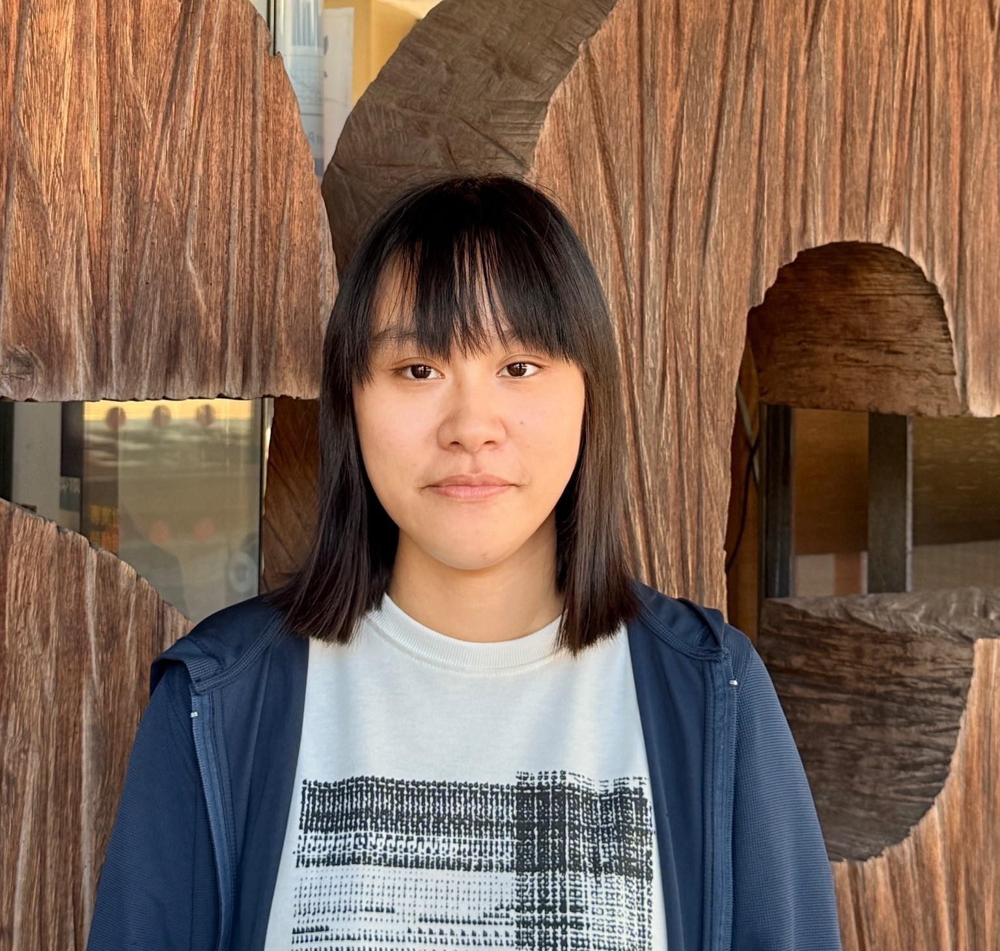

Hello，我是 Tina！
UI/UX Designer
具備 iOS、Android 與 IoT UI/UX 設計經驗，熟悉平台設計規範（Human Interface Guidelines / Material Design），能獨立完成 Wireframe、Prototype 並產出接近實際開發的介面設計。
聯絡我基本資料
過去參與文化大學推廣教育部-全端工程師養成班，在那段期間擔任UI/UX Designer及前端工程師，並且與團隊協作完成多個專案。這段經歷不止讓我了解到完整開發流程，也為我後續擔任UI/UX Designer埋下良好的基礎，讓我可以設計出符合iOS、Android平台設計規範的手機介面。
- 姓名：陳婷如
- 性別：女性
- 信箱：s5199676@gmail.com
- 地址：新北市中和區
- 駕照：普通重機、普通小型車
- 交通工具：普通重機
專案經歷
寵旅匠 Pet Craft
寵物美容與住宿預約平台
- 產業新尖兵計劃-文化大學推廣教育部｜團體專案
- 擔任職位：UI/UX設計師
- 負責項目：UI/UX介面設計與使用者體驗
- 使用技術：應用 Persona 與 User Flow 規劃使用者體驗流程，並透過 Figma 完成 Wireframe 與 Prototype 設計。
大腦活化 Brain Time
失智症檢測平台
- 產業新尖兵計劃-文化大學推廣教育部｜團體專案
- 擔任職位：前端工程師
- 負責項目：前端畫面開發與互動功能實作，優化使用者體驗與操作流程。
- 使用技術：使用 Vue3 + Vite ，優化使用者操作流程，獨立完成7個頁面切版。
設計靈感收藏系統
Claude Code 輔助開發，使用 Vue3 + Django 實作 JWT 登入、收藏 CRUD、分類管理與 RESTful API。
- 個人專案
- 使用 Cloude Code 輔助開發，並協助進行系統架構設計輔助、API 架構整理、README 文件優化、前後端專案結構規劃。
學習筆記管理系統
Claude Code 輔助開發，使用 React + Django 實作 RESTful API、搜尋與分頁功能。
- 個人專案
- 使用 Cloude Code 輔助開發，並且協助進行前後端專案結構規劃、系統架構設計規劃、README 文件優化。
設備報修管理系統
使用 Vue 3 + Vuetify + Pinia 與 Laravel RESTful API 架構，整合設備管理與報修流程追蹤，提供儀表板統計與維修紀錄功能。
- 個人專案
- 雖然此專案為個人專案，但是有透過這份專案練習前後端分離架構及 Git 版本控制，也練習 Git 分支命名規範。
皮鞋電商平台系統
使用 Vue 3 + Vite + Pinia + Tailwind CSS 架構，整合商品展示、購物車、會員管理與訂單流程，提供前台購物體驗與後台管理儀表板功能。
- 個人專案
- 此專案聚焦前端工程實踐，因此呈現前台購物體驗和後台管理系統的介面與互動邏輯，但是沒有撰寫後端邏輯，所以沒有串接金流。
工作經驗
絲米達整合行銷股份有限公司 美術設計師
2024.08 - 2025.03工作內容
- 離職原因：因公司組織調整進行職位縮減，無適合職缺可供安排
- 負責電商視覺設計，包含商品主圖、詳情頁、Banner及活動素材製作
- 規劃官網商品分類與上架管理，優化使用者瀏覽體驗
- 製作實體行銷物料(DM、POP、商品手冊)及包裝設計
- 統籌設計印刷流程，確保專案如期完成
華陀扶元堂生藥科技股份有限公司 平面設計／美編
2023.08 - 2023.11工作內容
- 離職原因：尋求職涯成長機會
- 負責電商視覺設計，包含商品主圖、詳情頁、Banner 及活動素材製作
- 管理多平台商品上架與維護(WACA、蝦皮、MOMO 等)
- 設計社群媒體素材，維護品牌視覺一致性
- 製作動態圖像，提升品牌視覺形象
學習經歷
文大推廣 x 程式驅動 全端設計工程師養成班
2025年4月參加 文大推廣 x 程式驅動 全端設計工程師養成班，系統化學習前端與後端技術，包含 HTML、CSS、JavaScript 及前端框架 (Vue、React)、SQL 資料庫、後端基礎（Python Django、PHP Laravel），並完成多個實作專案。
- 2025.04 - 2025.08
- 取得結訓證書
中國科技大學-視覺傳達設計系
- 2018.09 - 2022.06
- 學士畢業
自傳
UI/UX 實務經驗
曾參與 IoT App 的 UI/UX 設計工作，負責 iOS 與 Android 行動應用介面的設計優化與使用者流程規劃，並依據 iOS Human Interface
Guidelines（HIG）與 Android (Material Design)
設計規範進行跨平台介面設計。期間與工程師及加我科技相關團隊密切協作，將設計需求轉化為可實作的產品功能。
該專案涉及 IoT 裝置與 App 的互動流程設計，我參與 iOS 與 Android 平台的裝置控制流程及操作介面優化，並針對不同平台的操作邏輯與使用情境提出 UX
改善建議，使整體操作流程更直覺且符合實際使用需求。同時持續優化介面一致性與互動體驗，以提升產品易用性與操作流暢度。
過去培訓經驗與專案執行
曾於文化大學推廣教育部參與程式設計培訓，與培訓學員共同完成寵旅匠與大腦活化開發並成功上線。過程中，我參與 UI/UX 設計、前端介面製作以及功能整合，累積從設計到開發的完整流程經驗，也了解每個UI/UX設計畫面與工程師開發之間的連結性，也為後續的UI/UX設計工作埋下良好的設計基礎。
個人特質與未來目標
我認為自己的優勢在於主動學習與持續優化問題的能力。面對新的需求或挑戰時，我會透過查詢資料、實作測試與反覆調整來提升能力，未來希望持續朝 UI/UX 與前端整合方向發展，成為兼具使用者體驗思維與實作能力的產品設計人才。